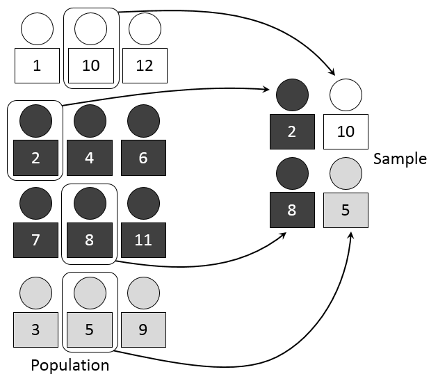
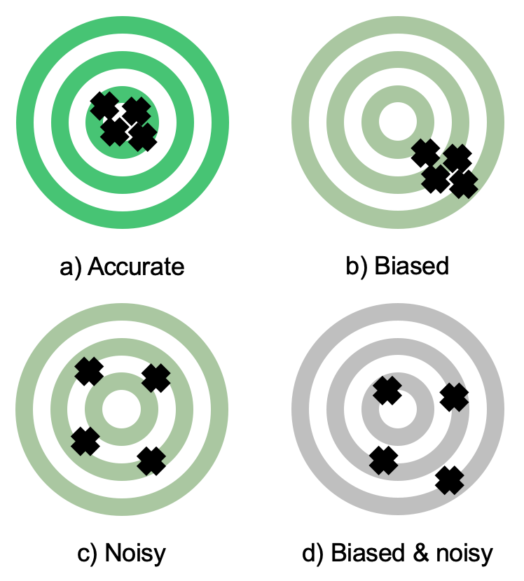
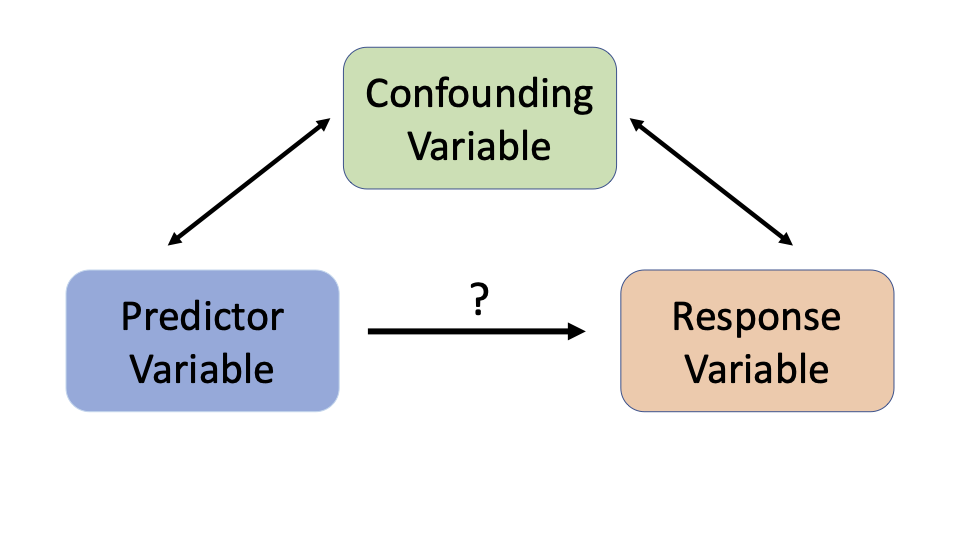
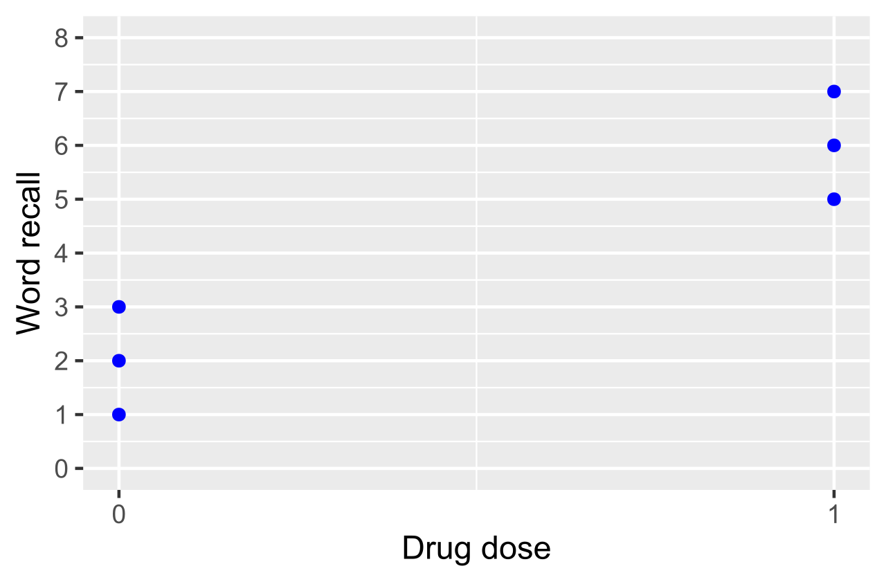

Sampling & Data Collection
Almost every number you will ever meet in a report, a news story, or a research paper came from a sample — a few people standing in for many. That fact should make you nervous until you understand why it works, and it works far better than most people expect: a well-chosen sample of a thousand can describe a nation of three hundred million to within a few percentage points. The catch is the word well-chosen. A sample earns its authority from how it was selected, never from how big it is, and the most spectacular statistical failures in history were enormous samples collected badly. This chapter shows you where good data comes from, how it goes wrong, and how to tell the difference between a study that can prove a cause and one that can only spot a pattern.
By the end of this chapter you can
- Distinguish a population from a sample, and a parameter from a statistic.
- Explain why a randomly chosen sample represents its population, and why precision depends on n rather than on population size.
- Compute and interpret the standard error of a sample mean, σ/√n.
- Describe and carry out simple random, stratified, cluster, and systematic sampling, and say why convenience sampling is not a probability method.
- Separate sampling error from bias, and sampling error from nonsampling error.
- Recognize undercoverage, voluntary response, nonresponse, and response bias in a described study.
- Tell an observational study from an experiment and state exactly what each one licenses you to conclude.
- Design a simple experiment using control, randomization, replication, blinding, and a placebo.
Section 1Why sampling works

Population, sample, parameter, statistic
The population is every individual you want to say something about — every registered voter, every bag of chips off the line, every patient with a certain diagnosis. The sample is the subset you actually measure. A number that describes the population is a parameter; a number computed from your sample is a statistic. Parameters are fixed and (almost always) unknown. Statistics are known and, because a different sample would have given different numbers, they wobble.
Keeping the two straight is the single most useful habit in this book, because the entire subject is one long answer to one question: how close is my statistic to the parameter I care about? Notation helps — Greek letters for the truth, Roman letters for the estimate.
| Quantity | Parameter (population) | Statistic (sample) | Known? |
|---|---|---|---|
| Mean | μ | x̄ | μ unknown; x̄ computed |
| Standard deviation | σ | s | σ unknown; s computed |
| Proportion | p | p̂ | p unknown; p̂ computed |
| Size | N | n | Both usually known |
A census measures the whole population, so it reports parameters directly. We sample instead of taking a census for four reasons: cost, time, inaccessibility (you cannot find every homeless person in a city), and destruction (testing whether a fuse blows destroys the fuse — a census of fuses would leave none to sell).
Why a random sample looks like its population
Representativeness is not something you can eyeball. A sample "looks representative" to a human only after the human has decided which features matter, and the features that matter are usually the ones nobody thought of. Random selection solves this without knowing anything about the population: if every individual has the same chance of being drawn, then every characteristic — age, income, opinion, blood type, the ones you measured and the ones you never imagined — is represented in the sample in roughly its population proportion, on average. Randomness does not guarantee a good sample every time. It guarantees that the misses are unbiased and, crucially, that their size is calculable.
That last point is what makes sampling a science rather than a hope. The wobble from sample to sample has a name, sampling variability, and a measurable size, the standard error. For a sample mean drawn from a population with standard deviation σ,
SE(x̄) = σ ÷ √n
That formula comes with conditions attached, and it is worth naming them now because every technique later in this book inherits them. It requires the observations to be independent — in practice, that the individuals were drawn at random and that the sample is no more than roughly 10% of the population, so that removing one unit barely changes the odds for the next. Violate either condition and the formula misreports the true wobble: sample a large slice of a small population and the real standard error is smaller than σ/√n; use a cluster design, where neighbors resemble neighbors, and it is larger. A standard error computed from a convenience sample is not conservative or approximate — it is meaningless, because the probabilities it is built from do not exist.
A worked example: how precision grows
Suppose commute times in a large city have a standard deviation of σ = 12 minutes, and we want to estimate the mean commute μ.
- n = 36: SE = 12 ÷ √36 = 12 ÷ 6 = 2.0 minutes
- n = 144: SE = 12 ÷ √144 = 12 ÷ 12 = 1.0 minute
- n = 576: SE = 12 ÷ √576 = 12 ÷ 24 = 0.5 minutes
Read the pattern: to cut the standard error in half you must quadruple the sample, because n sits under a square root. Going from 36 to 144 people (four times the work) buys you twice the precision, not four times. This is the law of diminishing returns that governs every survey budget ever written.
It also tells you how far off a typical sample lands — provided one more assumption holds: that the sampling distribution of x̄ is approximately normal. That is exact when the population itself is normal, and approximately true for a large enough n whatever the population shape, by the Central Limit Theorem. Granting it, if the true mean commute is μ = 24 minutes and n = 36, then roughly 95% of samples produce an x̄ within about 2 standard errors of the truth — that is, between 24 − 2(2.0) = 20 minutes and 24 + 2(2.0) = 28 minutes. Notice what is random here: the sample, not μ. The population mean sits still; our estimate is what moves. The "95%" describes how often the procedure lands close, across all the samples we might have drawn — it is never a probability statement about μ, which has no probability distribution at all.
Now look hard at that formula. N, the population size, does not appear in it. As long as the sample is a small fraction of the population, a sample of 1,000 is essentially as precise for a country of 300 million as it is for a town of 30,000. This is the most counter-intuitive true fact in introductory statistics, and it is why national polls of about 1,000 people are not absurd. What you need is a big enough spoonful, not a spoonful proportional to the size of the pot — provided the soup is stirred.
- A parameter (μ, σ, p) describes the population and is unknown; a statistic (x̄, s, p̂) is computed from the sample and varies.
- Random selection makes a sample representative on every variable at once, including the ones you never measured.
- SE(x̄) = σ/√n — quadrupling n halves the standard error.
- Precision depends on n, essentially not on population size; a bigger badly chosen sample is just a more confident wrong answer.
Section 2Sampling methods

The sampling frame comes first
Before you can select anybody you need a sampling frame: the actual list of units you will draw from. The frame is where good intentions quietly die. You may want "all adults in the county," but your frame is "all landline numbers in the county," and those are not the same population. Every method below is only as good as the frame it runs on, so write down your frame explicitly and ask who is missing from it.
The four probability methods
A probability sample is one in which every individual has a known, nonzero chance of selection. Only probability samples support the inference machinery in the rest of this book.
A simple random sample (SRS) of size n is one chosen so that every possible group of n individuals is equally likely to be the sample. In practice you number the frame 1 to N and let a computer draw n distinct numbers. Note the definition carefully: it is stronger than "everyone has an equal chance." Systematic sampling gives everyone an equal chance too, yet most groups of size n can never be selected by it, so it is not an SRS.
Stratified sampling splits the frame into strata — groups whose members resemble each other, such as class year, region, or age band — and then takes a separate random sample inside every stratum. When the strata really do differ from one another, this beats an SRS of the same size, because you have removed between-group variation from your estimate by force instead of leaving it to luck. It also guarantees you will not accidentally draw zero seniors.
Cluster sampling also divides the frame into groups, but the logic is reversed. Clusters are naturally occurring bundles — city blocks, clinics, classrooms — each of which ideally resembles the whole population in miniature. You randomly select whole clusters and then measure everyone inside the chosen ones. This is a cost method: visiting 30 blocks and interviewing every household is far cheaper than chasing 600 addresses scattered across a city. The price is precision. Neighbors resemble neighbors, so 600 people from 30 blocks carry less independent information than 600 people drawn at random.
Systematic sampling takes every k-th unit after a random start, with k = N/n. It is fast and needs no numbered list — you can do it at a factory exit or a store door. Its one real danger is periodicity: if the list repeats with a cycle that matches k, the sample locks onto one phase of the cycle. Sampling every 7th day of hospital admissions, for instance, means every observation falls on the same weekday.
A worked example: proportional allocation and a systematic plan
A student body of N = 12,000 breaks down as 4,200 first-years, 3,300 sophomores, 2,700 juniors, and 1,800 seniors (4,200 + 3,300 + 2,700 + 1,800 = 12,000 ✓). We want n = 400 students, allocated proportionally, so each stratum contributes nh = n × (Nh / N). Since 400/12,000 = 1/30, we simply divide each stratum by 30:
- First-years: 4,200 ÷ 30 = 140
- Sophomores: 3,300 ÷ 30 = 110
- Juniors: 2,700 ÷ 30 = 90
- Seniors: 1,800 ÷ 30 = 60
Check the total: 140 + 110 + 90 + 60 = 400 ✓. Every student's selection probability is 140/4,200 = 1/30 for a first-year, 60/1,800 = 1/30 for a senior — identical, which is exactly the point of proportional allocation.
The same 400 by systematic sampling instead: k = 12,000 ÷ 400 = 30. Draw a random start between 1 and 30 — say 17 — then take students 17, 47, 77, 107, and so on, each one 30 further down the list. The j-th pick is 17 + 30(j − 1), so the 400th is 17 + 30(399) = 17 + 11,970 = 11,987, comfortably inside the list ✓. Fast, tidy, and perfectly fine here — unless the enrollment list happens to cycle every 30 names.
| Method | How it works | Best when | Main risk |
|---|---|---|---|
| Simple random | Every group of size n equally likely | You have a clean, complete frame | Costly to reach a scattered sample |
| Stratified | Split into similar groups, sample within every group | Groups differ from each other | Needs stratum sizes known in advance |
| Cluster | Split into mini-populations, sample whole groups | Travel or contact cost dominates | Less precise per person; clusters must be internally diverse |
| Systematic | Random start, then every k-th unit, k = N/n | Units arrive in a stream; no list exists | Hidden periodicity in the ordering |
| Convenience | Whoever is easy to reach | Never, for inference | Bias of unknown size and unknown direction |
Convenience sampling — surveying the people already in front of you — and its cousin voluntary response sampling, in which people select themselves by calling in or clicking a link, are not probability methods at all. Nobody's chance of selection is known, so no standard error can be computed and no margin of error is meaningful. They are useful for generating hypotheses and for pilot-testing a questionnaire, and for nothing else. Real surveys often chain methods together into a multistage design: cluster on counties, then on blocks, then take an SRS of households, then randomly pick one adult inside each household.
- Define the sampling frame first; everyone missing from the frame is invisible to your study.
- An SRS makes every group of size n equally likely — a stronger condition than equal individual chances.
- Stratified samples from every group (usually more precise); cluster samples whole groups (usually cheaper, less precise).
- Systematic uses k = N/n after a random start; watch for periodicity.
- Convenience and voluntary response samples support no valid inference at any size.
Section 3Bias and error

Two completely different ways to be wrong
Every estimate misses the truth, but there are two unrelated reasons why, and confusing them is the most expensive mistake in applied statistics. Sampling error is the ordinary, unavoidable difference between a sample statistic and the population parameter that arises simply because you measured some individuals rather than all of them. It is random, it is centered on zero, and it shrinks predictably as n grows — that is the σ/√n from Section 1.
Bias is systematic: a tendency for your method to miss in the same direction sample after sample. Bias does not shrink with n. Collect ten times as much data with the same flawed method and you get the same wrong answer with a tighter, more persuasive error bar around it. Think of it as target shooting: random error is a wide shot group, bias is a tight shot group centered off the bullseye. More ammunition tightens the group; only fixing the sights moves it.
The named biases, and where they come from
Undercoverage occurs when part of the population cannot appear in the frame at all — a landline-only poll in a cell-phone world, or a mall survey that misses everyone who does not shop at malls. Voluntary response bias arises because people who take the trouble to respond hold stronger opinions, usually negative, than those who do not. Nonresponse bias hits after selection: your sample was chosen properly, but a large chunk did not answer, and the ones who answered differ from the ones who did not. Response bias is about the measurement itself — question wording ("Do you support wasteful spending on X?"), social desirability (people under-report drinking and over-report voting and flossing), interviewer effects, and faulty recall.
| Problem | What goes wrong | Direction | Does a bigger n help? |
|---|---|---|---|
| Sampling error | Luck of the draw | Random, averages to zero | Yes — shrinks in proportion to 1/√n |
| Undercoverage | Frame excludes part of the population | Systematic | No |
| Voluntary response | People select themselves in | Systematic (strong opinions over-represented) | No |
| Nonresponse | Selected people do not answer | Systematic | No |
| Response bias | Answers are inaccurate as given | Systematic | No |
| Processing / measurement | Bad instrument, data-entry or coding errors | Either | No |
The last three rows are nonsampling error — every source of error that has nothing to do with which individuals you picked. Nonsampling error is the reason a census can still be wrong: the U.S. census reaches for everybody and still misses people and miscodes answers. In most real surveys, nonsampling error is larger than sampling error, and it is the part nobody reports.
A worked example: bias dwarfs the margin of error
A researcher randomly selects 1,000 adults and asks whether they exercise at least three times a week. Only 400 respond, and 260 of those say yes:
p̂ = 260 ÷ 400 = 0.65, or 65%
The reported 95% margin of error for a proportion is about 1.96 × √(p̂(1 − p̂) / n). Before using it, check what it assumes: a random sample of independent individuals, and enough of both outcomes for the normal approximation to be trustworthy — the usual rule of thumb is at least 10 successes and 10 failures. Here we have 260 yes and 140 no ✓, so the arithmetic is legitimate. Watch what happens next anyway. Step by step:
- p̂(1 − p̂) = 0.65 × 0.35 = 0.2275
- 0.2275 ÷ 400 = 0.00056875
- √0.00056875 ≈ 0.02385
- 1.96 × 0.02385 ≈ 0.0467 → about ±4.7 percentage points
Now suppose a determined follow-up reaches the 600 nonrespondents and finds that only 25% of them exercise three times a week — 0.25 × 600 = 150 people. The truth across all 1,000 selected adults is
(260 + 150) ÷ 1,000 = 410 ÷ 1,000 = 0.41, or 41%
The estimate was off by 0.65 − 0.41 = 0.24, twenty-four percentage points, while the advertised uncertainty was under five. The bias is five times the entire margin of error. And here is the sting: repeat the study with 10,000 selected adults at the same 40% response rate and the estimate stays near 65% while the margin of error falls to about ±1.5 points. You will have bought yourself a far more precise version of the same wrong number.
- Sampling error is random and shrinks in proportion to 1/√n; bias is systematic and does not shrink at all.
- Nonsampling error (coverage, nonresponse, response, processing) can strike even a full census and usually exceeds sampling error.
- Nonresponse bias is measured by who is missing, so a low response rate is a warning sign no sample size can cure.
- A margin of error quantifies chance variation only — never bias.
Section 4Observational studies versus experiments

One question separates them
The dividing line is embarrassingly simple: who decided who got what? In an observational study the researcher measures individuals as they already are, recording an exposure that the individuals (or life) chose for them. In an experiment the researcher assigns the explanatory variable — deciding, by a chance mechanism, which subjects receive which treatment — and then compares the outcomes.
Observational studies come in familiar shapes. A cross-sectional study takes a snapshot at one point in time. A prospective cohort study identifies people now and follows them forward, waiting for outcomes to appear. A retrospective case-control study starts with people who already have the outcome, matches them to people who do not, and looks backward for differences in exposure. All three observe; none assigns.
Why observation cannot prove cause
A confounding variable (also called a lurking variable) is a third factor associated with the explanatory variable and related to the response, so that its effect cannot be untangled from the effect you care about. Since people sort themselves into the exposed and unexposed groups, and they sort by all sorts of hidden reasons, observational groups differ in a thousand ways besides the exposure.
Watch how badly this can go, with exact numbers. Take 1,000 coffee drinkers, of whom 600 smoke, and 1,000 non-coffee-drinkers, of whom 200 smoke. Let lung cancer strike 10% of smokers and 1% of nonsmokers — and let coffee itself do absolutely nothing.
- Coffee drinkers: (600 × 0.10) + (400 × 0.01) = 60 + 4 = 64 cases → 64/1,000 = 6.4%
- Non-coffee-drinkers: (200 × 0.10) + (800 × 0.01) = 20 + 8 = 28 cases → 28/1,000 = 2.8%
Coffee drinkers get lung cancer at 6.4% versus 2.8% — a rate ratio of 6.4 ÷ 2.8 ≈ 2.3, so a headline could truthfully announce that coffee drinkers are more than twice as likely to develop lung cancer. Every number above is real and correctly computed; the causal story is pure fiction manufactured by smoking. That is confounding, and no amount of extra data removes it, because more data means more of the same tangle.
So when you see an association between X and Y, five explanations compete: X causes Y; Y causes X (reverse causation — do sneakers cause fitness, or do the fit buy sneakers?); a confounder causes both; the association is a fluke of sampling; or the study was biased. Observation alone cannot referee among them.
What each design licenses you to say
Two different randomizations do two different jobs, and students mix them up constantly. Random sampling — how subjects got into the study — buys generalization to the population. Random assignment — how subjects got sorted once inside — buys causal conclusions. They are independent choices, so there are four cases.
| Random assignment | No random assignment | |
|---|---|---|
| Random sample | Causal conclusion, generalizable to the population (the gold standard, and rare) | Association only, generalizable to the population (a good survey or cohort study) |
| No random sample | Causal conclusion, but only for subjects like these (most clinical trials) | Association only, and only for subjects like these (a convenience study) |
Observational studies are not second-class citizens; they are often the only ethical or feasible option. You cannot randomly assign people to smoke for thirty years. What tips the balance toward causation without an experiment is an accumulated pattern — a large effect, a dose-response gradient, consistency across many populations and designs, correct time order, and a plausible mechanism — which is exactly how the case against tobacco was built.
- Observational study: exposure is observed. Experiment: exposure is assigned by the researcher.
- A confounder is linked to both the explanatory and response variables and makes association uninterpretable.
- Random sampling → generalizability; random assignment → causation. They are separate guarantees.
- Observational studies establish association; only a randomized experiment establishes causation directly.
Section 5Designing an experiment

The vocabulary, then the four principles
The individuals in an experiment are experimental units (called subjects when they are people). A factor is an explanatory variable you control; its settings are levels; a treatment is one combination of levels. The response is what you measure. A study of two drug doses at two delivery times has two factors, each at two levels, and therefore 2 × 2 = 4 treatments.
A good experiment rests on four ideas. Control means holding other conditions constant across groups and, above all, including a control group — a comparison arm receiving no treatment, a placebo, or the current standard of care. Without a comparison group you cannot separate the treatment's effect from the passage of time, from the illness resolving on its own, or from patients regressing toward their usual state. Randomization assigns units to treatments by chance. Replication means enough units per treatment that ordinary variation averages out — not merely repeating one measurement. Blocking groups similar units together and randomizes within each block, the experimental cousin of stratified sampling.
Randomization deserves its own sentence, because it is the whole reason experiments can prove things. It is not there to be fair. It is there to make the treatment groups equivalent, on average, in every respect — age, severity, genetics, diet, optimism, and the hundred variables nobody thought to record — so that when the outcomes differ, the only systematic difference left standing is the treatment. Matching on known variables cannot do this, because you can only match on what you thought of.
Placebo and blinding
A placebo is an inert imitation of the treatment — a sugar pill, a saline injection, a sham procedure. It exists because the placebo effect is real and often large: people improve because they believe they are being treated. If the control group gets nothing at all, the treatment group's improvement mixes the drug's effect with the belief's effect, and you cannot pull them apart. A placebo control makes the belief equal in both arms so the difference isolates the drug.
Blinding keeps people from knowing who got what. In a single-blind study the subjects do not know; in a double-blind study neither the subjects nor the people who interact with them and assess the outcome know. Double-blinding matters because expectation leaks: an enthusiastic assessor who knows a patient got the new drug rates that patient's "moderate" improvement as "marked." Whoever measures the response should be blind, always.
| Principle | What it does | What breaks without it |
|---|---|---|
| Control group | Provides the comparison baseline | Improvement from time, healing, or regression is credited to the treatment |
| Randomization | Balances known and unknown variables across arms | Groups differ systematically; confounding returns |
| Replication | Gives enough units for variation to average out | Ordinary noise is mistaken for a real effect |
| Blocking | Removes a known nuisance variable's influence | A big known source of variation hides the effect |
| Placebo | Equalizes the psychological effect of being treated | Belief effects are counted as drug effects |
| Double-blinding | Removes expectation from subjects and assessors | Reporting and rating drift toward what people expect |
A worked example: building the design
We want to compare a new headache drug against the standard drug and against a placebo, with 180 volunteers.
Completely randomized design. Number the volunteers 1 to 180 and use a computer to shuffle them into three arms of 180 ÷ 3 = 60 each. Every subject gets an identical-looking capsule, so nobody — subject, nurse, or assessor — can tell the arms apart: double-blind. Measure minutes to meaningful relief. Suppose the group means come back as placebo 42 minutes, standard drug 30, new drug 26. The comparisons are 42 − 30 = 12 minutes faster for the standard drug than placebo, and 30 − 26 = 4 minutes faster for the new drug than the standard. Because assignment was random, no pre-existing difference between the groups can explain those gaps in any systematic way; the remaining question is whether a gap this size could plausibly arise from chance alone, which is what the inference tools later in this book are built to answer.
Now block it. Suppose baseline headache severity strongly affects recovery time. Split the 180 into blocks first — say 108 with moderate headaches and 72 with severe ones — and randomize within each block: 108 ÷ 3 = 36 moderate per arm and 72 ÷ 3 = 24 severe per arm, and 36 + 24 = 60 per arm as before, 180 in total ✓. Every arm now has an identical severity mix by construction rather than by luck, so severity can no longer muddy the comparison, and the leftover variation the treatment effect must stand out from is smaller.
Two design cautions worth carrying forward. Keep lurking differences out of the procedure: if the new drug is given in a quiet private room and the placebo in a crowded hallway, the room is confounded with the drug. And beware attrition — subjects who drop out are usually the ones doing worst, so dropping them from the analysis quietly re-creates the very selection bias randomization was meant to destroy.
- The four pillars are control, randomization, replication, and (when useful) blocking.
- A placebo equalizes the psychological effect of treatment; double-blinding removes expectation from both subjects and assessors.
- Random assignment balances unmeasured variables, which is what licenses a causal conclusion.
- Blocking removes a known nuisance variable; it is stratification applied to assignment rather than selection.
The chapter in one breath
- A parameter describes the population and is unknown; a statistic comes from the sample and varies from sample to sample.
- Random selection, not sample size, is what makes a sample representative — it balances every variable, including the ones you never measured.
- SE = σ/√n: quadruple the sample to halve the error, and note that population size is essentially irrelevant.
- The probability methods are simple random, stratified (some from every group), cluster (everyone from some groups), and systematic (every k-th after a random start); convenience and voluntary response support no inference.
- Sampling error is random and shrinks with n; bias is systematic and never shrinks — a bigger bad sample is only a more confident wrong answer.
- Nonsampling error — coverage, nonresponse, response, processing — strikes even a census, and a margin of error accounts for none of it.
- Observational studies show association and are haunted by confounding; only experiments, which assign the treatment, demonstrate causation.
- Good experiments use a control group, random assignment, adequate replication, a placebo where relevant, and double-blinding.
ReferenceWords worth knowing
A quick reference for the terms in this chapter — skim it now, or circle back whenever a word trips you up.
- Bias
- A systematic tendency for a method to miss the truth in the same direction; unlike random error, it does not shrink as the sample grows.
- Blinding
- Withholding treatment assignment from participants (single-blind) or from participants and the researchers assessing them (double-blind).
- Blocking
- Grouping similar experimental units together and randomizing treatments within each group, so a known nuisance variable cannot distort the comparison.
- Census
- An attempt to measure every member of a population rather than a sample; still vulnerable to nonsampling error.
- Cluster sample
- A sample obtained by randomly choosing whole naturally occurring groups and measuring everyone inside them.
- Confounding variable
- A third variable associated with the explanatory variable and related to the response, so that their effects cannot be separated.
- Control group
- The comparison arm of an experiment, receiving no treatment, a placebo, or the current standard of care.
- Convenience sample
- A sample of whoever is easiest to reach; selection probabilities are unknown, so no valid inference is possible.
- Experiment
- A study in which the researcher assigns the explanatory variable to units, ideally at random, and then compares responses.
- Margin of error
- The half-width of an interval estimate, quantifying chance variation from sampling only — never bias or nonsampling error.
- Nonresponse bias
- Distortion arising when selected individuals do not participate and differ systematically from those who do.
- Nonsampling error
- Any error unrelated to which individuals were chosen — coverage gaps, nonresponse, inaccurate answers, measurement and processing mistakes.
- Observational study
- A study that records an exposure the subjects already have rather than assigning it; establishes association, not causation.
- Parameter
- A fixed numerical summary of a population, such as μ, σ, or p; almost always unknown.
- Placebo
- An inert imitation of a treatment, used so that the control group's belief in being treated matches the treatment group's.
- Population
- Every individual about whom you want to draw a conclusion.
- Random assignment
- Using chance to allocate subjects to treatments; it balances known and unknown variables and is what permits causal conclusions.
- Replication
- Assigning enough units to each treatment that ordinary variation averages out; not the same as repeating a single measurement.
- Response bias
- Distortion in the answers themselves — from question wording, social desirability, interviewer effects, or faulty recall.
- Sample
- The subset of the population actually measured.
- Sampling error
- The random difference between a sample statistic and the population parameter caused by measuring only part of the population.
- Sampling frame
- The concrete list of units from which a sample is actually drawn; anyone absent from it cannot be selected.
- Simple random sample (SRS)
- A sample chosen so that every possible group of n individuals is equally likely to be selected.
- Standard error
- The typical sample-to-sample wobble of a statistic; for a sample mean it is σ/√n, assuming independent observations.
- Statistic
- A numerical summary computed from a sample, such as x̄, s, or p̂; it varies from sample to sample.
- Stratified sample
- A sample formed by dividing the population into similar groups (strata) and drawing a random sample from within every stratum.
- Systematic sample
- A sample taken by choosing every k-th unit after a random start, with k = N/n; vulnerable to periodicity in the list.
- Undercoverage
- A coverage gap in which part of the population cannot appear in the sampling frame at all, and so can never be selected.
- Voluntary response bias
- Distortion arising when people select themselves into a sample, over-representing those with strong opinions.